ImpactHub
ImpactHub
Home
Volunteer
Ngos
AboutUs
ContactUs
LogIn/JoinUs
LogIn
SingUp
Donate
Hello,Who Are You ?
NGO
Volunteer
Volunteer Story
Meet Soumya Vishwanath, who leveraged her graphic design skills by volunteering virtually to help our Partner NGO fight against child sexual abuse. Her efforts have helped save the NGO over Rs 1,60,000
#VolunteerSpeaks : Juveria Iqbal found out about ImpactHub while looking for volunteering opportunities matching her skill set. She enhanced her graphic design skills
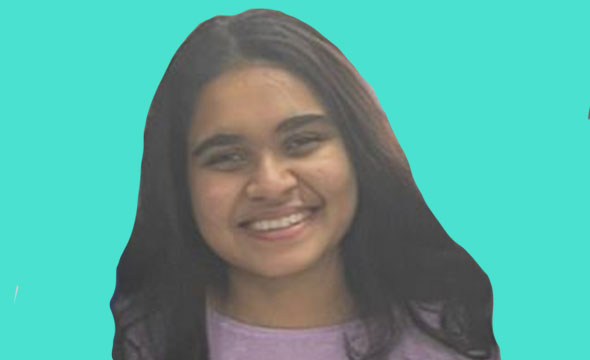
Kritika Das has been working with our Partner NGO Ek Tara for 2 years and she has been a part of our ImpactHub Artshala. She was excited to be a part of the event
Hazel Gogri found out about ImpactHub while looking for volunteering opportunities after giving her medicine entrance exam.
Saroja Nagraj - Featuring today we have S N Saroja who has been an active volunteer at ImpactHub. She is a retired professional and is very passionate about creating educational content for children.
Mayur Koli - Over 60 Lakh children in India are still unable to go to school. For the children going to school there is only 1 teacher per 50 students.
Ramesh Adhikari has been an active volunteer with us since 2021. He has volunteered with more than 06 NGOs by helping them build, develop and update their websites.
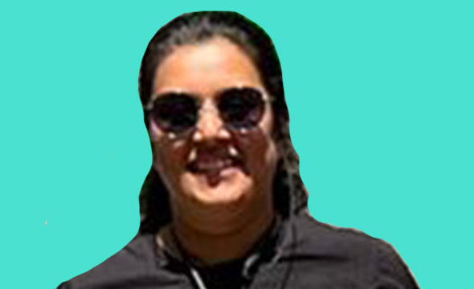
Featuring today on Mother's Day is the testimonial of our volunteer Pallavi Khurana, a Corporate Soft Skills Trainer and a mother of 2
Aditi Suba is working as a Data Engineer at an IT firm and has been volunteering with us since 2019 for various activities
Vrinda is a 19-year-old student pursuing her BA.LLB from UPES University. She came across ImpactHub through her college as they required them to do an internship in an NGO during the summer.
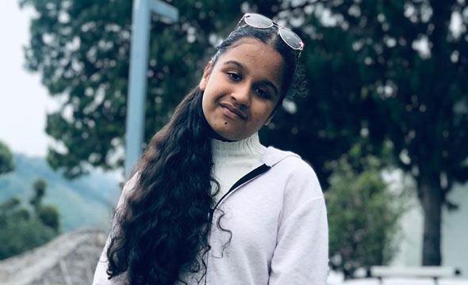
Aditi has been virtually volunteering with 2 of our NGO Partners Little Hearts Foundation and Healing Dove Foundation and here's what she has to say about her experience
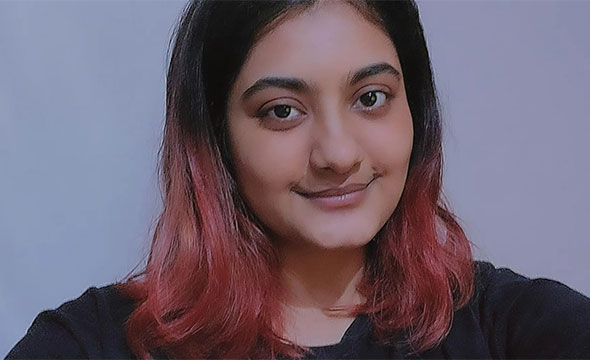
Khushboo heard about ImpactHub during the lockdown while she was pursuing her degree college.
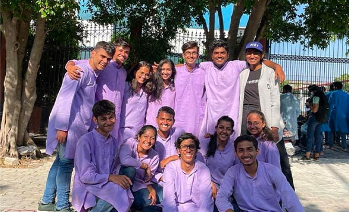
Verve Society volunteered for over 1600 hours and created an impact of more than ₹ 06,00,000 for our partner NGO Umoya Sports Foundation
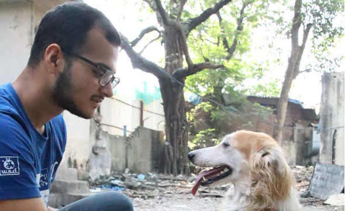
Abeez has been a volunteer with The Welfare of Stray Dogs for the past 2 years now and has been involved in multiple activities since then.
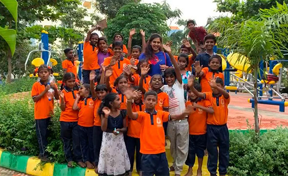
Harshitha has been volunteering with our partner NGO Robin Hood Army Bengaluru for almost 2 years now.
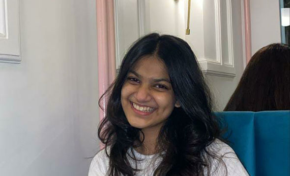
Aashka has been a dedicated volunteer since she discovered the ImpactHub website 2 years ago. So far Aashka has successfully volunteered with 2 of our NGO Partners
Chetona Bandyopadhyay - During her course at the University, Chetona was connected with our NGO Partner - Myjis Foundation as an intern and she successfully
Hear from one of ImpactHub’s very first volunteers - Vismay Parab! Vismay has been connected with ImpactHub since 2015, and has been a huge asset
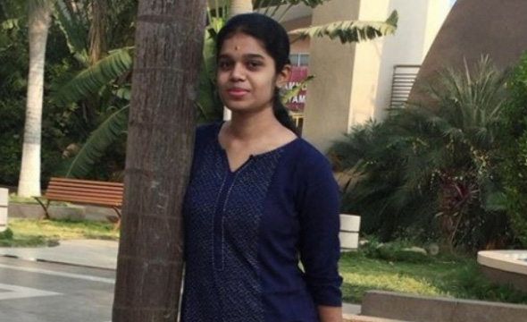
Meet Mirthu Bashini, a changemaker who has successfully completed her volunteering journey with our NGO Partner - Vivekananda Youth Forum.
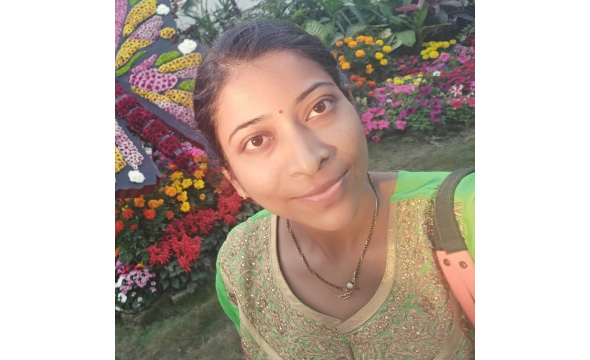
“The pandemic definitely triggered the search for volunteering opportunities,” says Ashwini Sawant
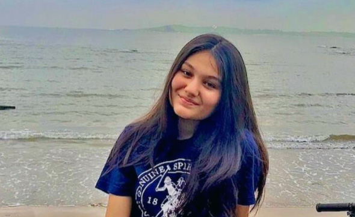
“ImpactHub was the first result to come up and I didn’t have to check further after that as ImpactHub had NGO requirements with all sorts of skill sets and it really made the whole process convenient for me,” says Yuvika
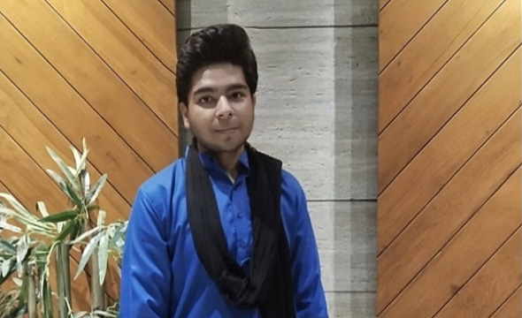
Meet Ayush Sarawagi, a young changemaker who volunteered recently and completed an administrative project with our NGO partner, Makkala Jagriti.
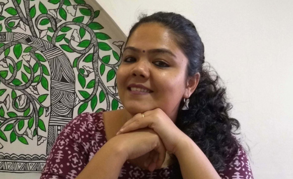
“Virtual volunteering is an exceptionally well thought concept, it really does not limit your ability to volunteer based on your or person's physical location.”
Pratibha is a changemaker at ImpactHub since 2018, and now a familiar face during most of our Group Virtual Volunteering activities.
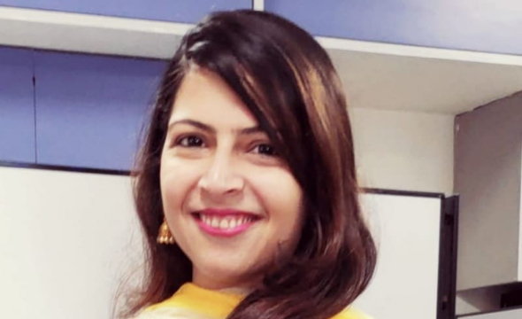
Parinaaz did her bit by Volunteering in HR and has created a significant impact! Here is what she has to say about her experience -
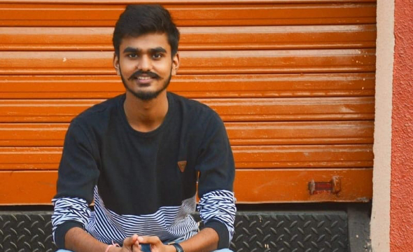
Pruthvi Shah did his bit by Volunteering as a Photographer and has impacted many young lives!
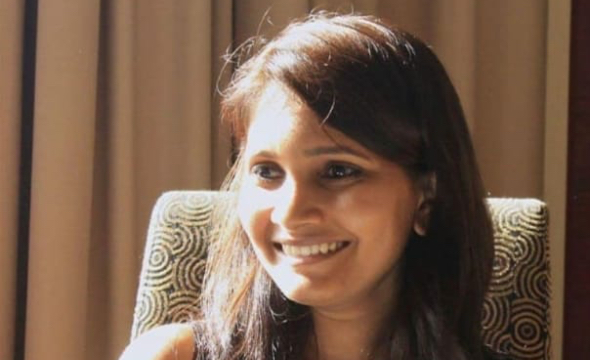
Tamanna did her bit by Volunteering in Strategic planning, Brand Building and many more and has created a significant impact!
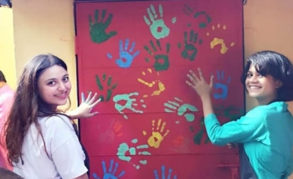
Here is how Volunteering got two friends to spend time together. Being in different colleges, we don’t get enough time to meet often, volunteering for opportunities by ImpactHub
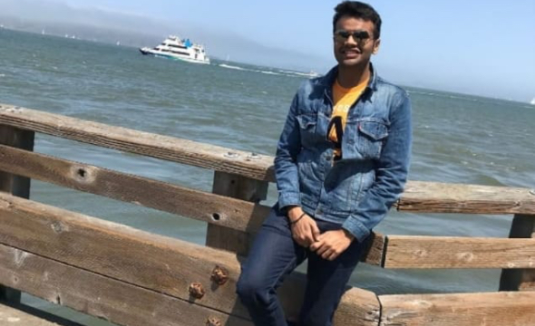
Dr. Arjun was connected to Ghaswala Vision Foundation. Here is what he has to share about his experience. "Ghaswala vision foundation has a strong agenda
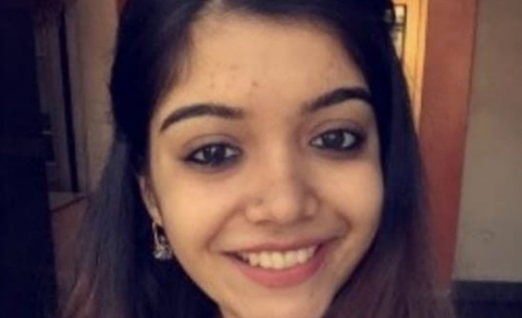
Here is Binal's story. A mind and skill development specialist by profession,she made a difference by using her skills and conducted various Motivational Therapy sessions with our NGO partners
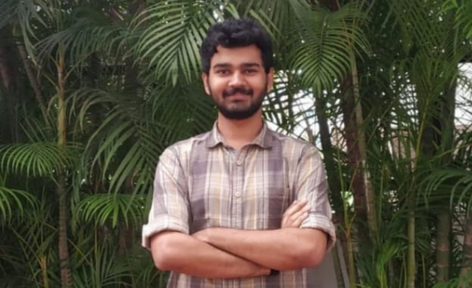
Sanidhya did his bit by volunteering to teach kids English and Maths and has created a significant impact!
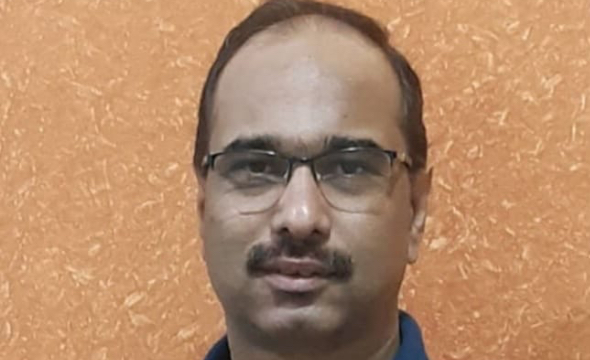
Our volunteer, Sidharth Dembi, has been working as a Math teacher with the Angel Express Foundation since 2017.
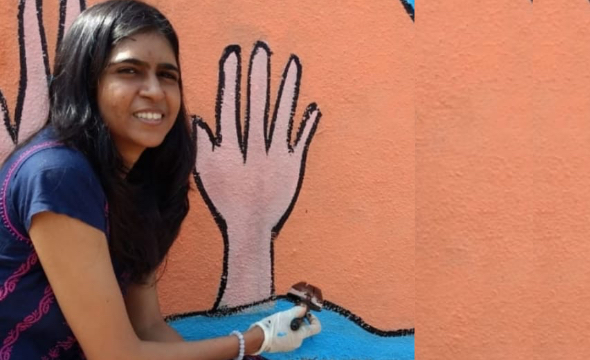
One of our volunteers, Amruta Gupta, has been remotely working as the Creative Support Intern with the SNEH Foundation since April 2019.
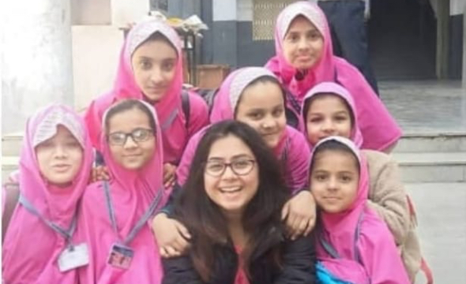
Arushi Nagar is our star volunteer for this month! She hails from Varanasi and is doing her fellowship with TFI at the moment in Ahmedabad.
Our star volunteer of the month, Srishti started out as a one-time volunteer at our community events which she found to be impactful and well thought out.
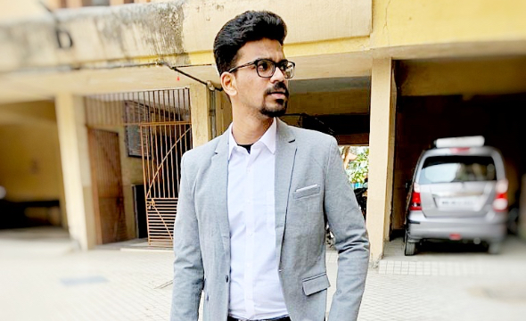
Our star volunteer of the month, Mr. Prashant Shivagan hails from Mumbai. He was looking to help an NGO and stumbled across ImpactHub through an internet search.
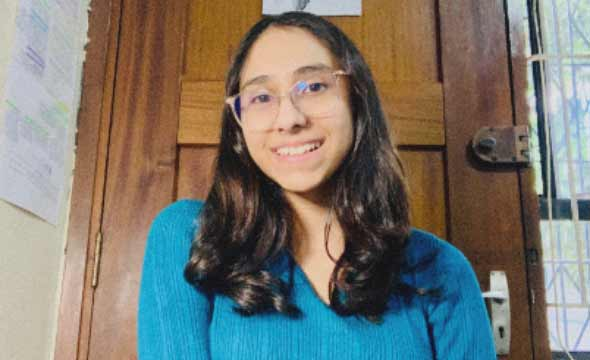
Meet Krishna Gajjar @_krishnagajjar , one of our youngest virtual volunteers! Here is what she wants to say about her volunteering journey so far with ImpactHub,
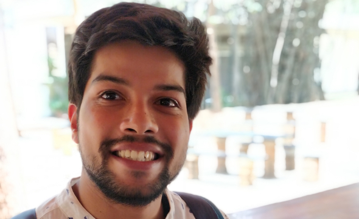
Meet our star volunteer @vipulskumar 🌟
Swapna Salian has successfully completed her Micro Volunteering journey with ImpactHub. Here’s what she has to say about
Waseem was a volunteer with the ImpactHub team, and quickly became a highly contributing and impactful peer for us!